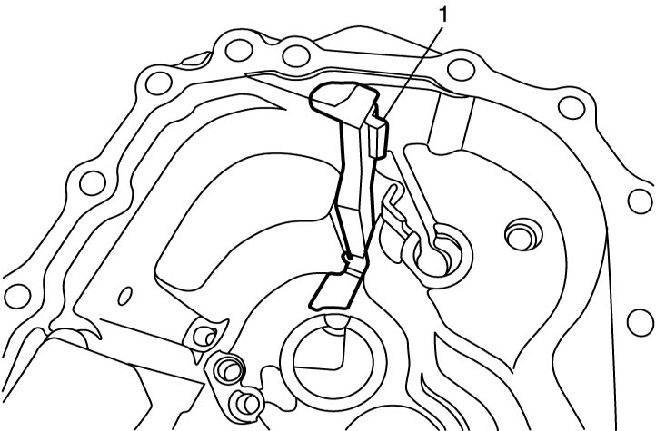
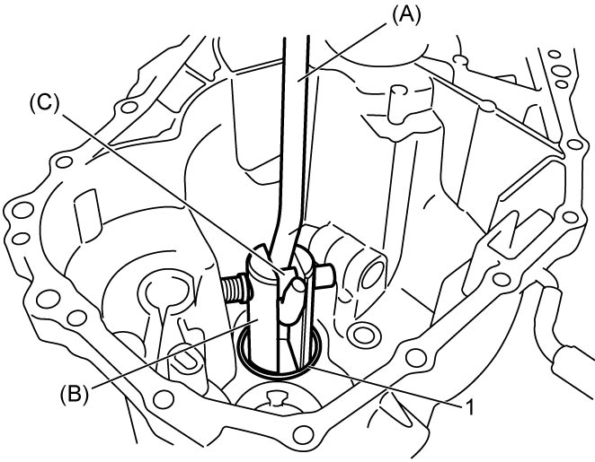

5B
| Transaxle Left Case Disassembly and Reassembly |
Disassembly
1)Remove oil gutter (1), if necessary.


 "Expand image")
2)Remove oil seal using flat-bladed screwdriver or the like.
3)Remove differential side bearing outer race (1) and shim using special tools.
 "Expand image")
4)Remove countershaft left bearing outer race (1) and shim using special tools.

 "Expand image")
Reassembly
1)Install oil gutter (1), if removed.
2)Select countershaft left side bearing shim and differential left side bearing shim as follows.
a)Keep pressing outer race with 35 N (3.67 kgf, 7.87 lbf) and turn countershaft assembly and differential case 10 times or more.
b)Measure distance “a” of countershaft assembly (1) and “e” of differential assembly (2).
c)Measure depth “b” and “g” of transaxle left case (3) and “c” and “f” of transaxle right case (4).
d)Calculate the clearance of “d” and “h” by the following formulas.
| Clearance of “d” = Depth “b” + Depth “c” – Distance “a” |
| Clearance of “h” = Depth “f” + Depth “g” – Distance “e” |
 "Expand image")
| [a]: | Push with force of 35 N (3.7 kgf, 7.9 lbf) | 5. | Outer race |
e)Select shim closest to clearance “d” and “h” from the following available sizes.
Available shim thickness
| Clearance “d” | Shim thickness |
|---|---|
| 0.795 – 0.845 mm (0.0313 – 0.0332 in.) |
1.05 mm (0.0413 in.) |
| 0.845 – 0.895 mm (0.0332 – 0.0352 in.) |
1.10 mm (0.0433 in.) |
| 0.895 – 0.945 mm (0.0352 – 0.0372 in.) |
1.15 mm (0.0453 in.) |
| 0.945 – 0.995 mm (0.0372 – 0.0391 in.) |
1.20 mm (0.0472 in.) |
| 0.995 – 1.045 mm (0.0391 – 0.0411 in.) |
1.25 mm (0.0492 in.) |
| 1.045 – 1.095 mm (0.0411 – 0.0431 in.) |
1.30 mm (0.0512 in.) |
| 1.095 – 1.145 mm (0.0431 – 0.0450 in.) |
1.35 mm (0.0531 in.) |
| 1.145 – 1.195 mm (0.0450 – 0.0470 in.) |
1.40 mm (0.0551 in.) |
| 1.195 – 1.245 mm (0.0470 – 0.0490 in.) |
1.45 mm (0.0571 in.) |
| 1.245 – 1.295 mm (0.0490 – 0.0509 in.) |
1.50 mm (0.0591 in.) |
| 1.295 – 1.345 mm (0.0509 – 0.0529 in.) |
1.55 mm (0.0610 in.) |
| 1.345 – 1.395 mm (0.0529 – 0.0549 in.) |
1.60 mm (0.0630 in.) |
| 1.395 – 1.445 mm (0.0549 – 0.0568 in.) |
1.65 mm (0.0650 in.) |
| 1.445 – 1.495 mm (0.0568 – 0.0588 in.) |
1.70 mm (0.0669 in.) |
| 1.495 – 1.545 mm (0.0588 – 0.0608 in.) |
1.75 mm (0.0689 in.) |
| 1.545 – 1.595 mm (0.0608 – 0.0627 in.) |
1.80 mm (0.0709 in.) |
| 1.595 – 1.645 mm (0.0627 – 0.0647 in.) |
1.85 mm (0.0728 in.) |
| 1.645 – 1.695 mm (0.0647 – 0.0667 in.) |
1.90 mm (0.0748 in.) |
| 1.695 – 1.745 mm (0.0667 – 0.0687 in.) |
1.95 mm (0.0768 in.) |
| 1.745 – 1.795 mm (0.0687 – 0.0706 in.) |
2.00 mm (0.0787 in.) |
| Clearance “h” | Shim thickness |
|---|---|
| 0.795 – 0.835 mm (0.0313 – 0.0329 in.) |
1.00 mm (0.0394 in.) |
| 0.835 – 0.875 mm (0.0329 – 0.0344 in.) |
1.04 mm (0.0409 in.) |
| 0.875 – 0.915 mm (0.0344 – 0.0360 in.) |
1.08 mm (0.0425 in.) |
| 0.915 – 0.955 mm (0.0360 – 0.0376 in.) |
1.12 mm (0.0441 in.) |
| 0.955 – 0.995 mm (0.0376 – 0.0392 in.) |
1.16 mm (0.0457 in.) |
| 0.995 – 1.035 mm (0.0392 – 0.0407 in.) |
1.20 mm (0.0472 in.) |
| 1.035 – 1.075 mm (0.0407 – 0.0423 in.) |
1.24 mm (0.0488 in.) |
| 1.075 – 1.115 mm (0.0423 – 0.0439 in.) |
1.28 mm (0.0504 in.) |
| 1.115 – 1.155 mm (0.0439 – 0.0455 in.) |
1.32 mm (0.0520 in.) |
| 1.155 – 1.195 mm (0.0455 – 0.0470 in.) |
1.36 mm (0.0535 in.) |
| 1.195 – 1.235 mm (0.0470 – 0.0486 in.) |
1.40 mm (0.0551 in.) |
| 1.235 – 1.275 mm (0.0486 – 0.0502 in.) |
1.44 mm (0.0567 in.) |
| 1.275 – 1.315 mm (0.0502 – 0.0518 in.) |
1.48 mm (0.0583 in.) |
| 1.315 – 1.355 mm (0.0518 – 0.0533 in.) |
1.52 mm (0.0598 in.) |
| 1.355 – 1.395 mm (0.0533 – 0.0549 in.) |
1.56 mm (0.0614 in.) |
| 1.395 – 1.435 mm (0.0549 – 0.0565 in.) |
1.60 mm (0.0630 in.) |
| 1.435 – 1.475 mm (0.0565 – 0.0581 in.) |
1.64 mm (0.0646 in.) |
| 1.475 – 1.515 mm (0.0581 – 0.0596 in.) |
1.68 mm (0.0661 in.) |
3)Install countershaft left bearing shim first and countershaft left bearing outer race in transaxle left case, and then press-fit the bearing race using special tool.
 "Expand image")
4)Install differential left side bearing shim first and differential left side bearing outer race in transaxle left case, and then press-fit the bearing race using special tools.
 "Expand image")
5)Install new oil seal.